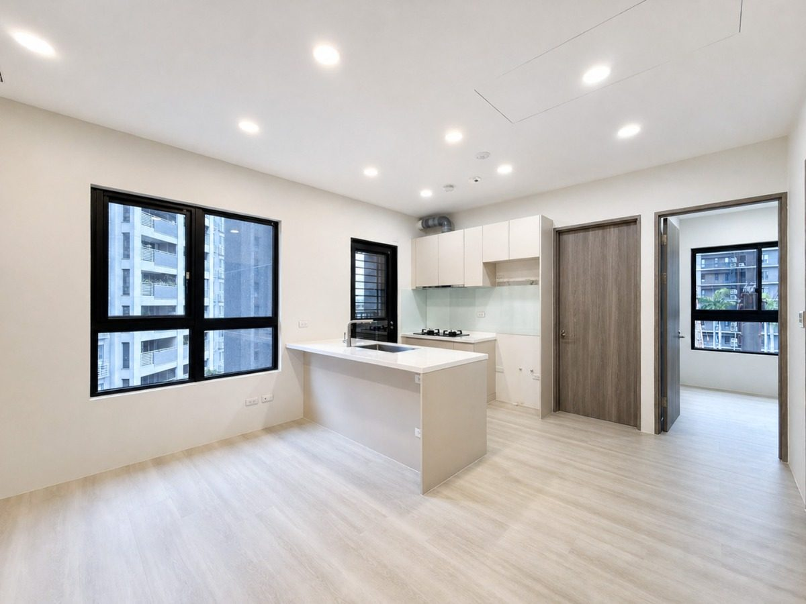

北投 · 北投區北科路
北士科常殷一域前棟兩房雙衛
五樓邊間，2025年完工
3790萬
物件概況
- 社區
- 常殷一域
- 位置
- 北投區北科路
- 類型
- 電梯住宅
- 樓層
- 5樓／9樓，邊間，一層5戶
- 格局
- 2房2廳1.5衛1陽台
- 屋齡
- 約1.1年
- 建坪
- 約39.51坪（含車位）
- 主建物
- 約15.41坪
- 附屬建物
- 陽台約1.50坪
- 共有部分
- 約22.60坪（含車位約12.81坪）
- 地坪
- 約7.57坪
- 車位
- 地下三層坡道平面，含在總價，車位300萬，車位管理費800元含在管理費
- 座向
- 座東北朝西南
- 管理費
- 5606元／月
- 交通
- 捷運芝山站、明德站
- 生活
- 北士科、文林國小、明德國中、石牌自強市場、軟橋公園
照片


特色
- 常殷建設，常殷一域42戶
- 5樓邊間，一層5戶，兩面採光，房間皆有窗
- 2房2廳1.5衛1陽台
- 2025年10月完工，原始屋況
- 座東北朝西南，天然瓦斯
- 全天候物業管理
- 近芝山站、明德站、文林國小、明德國中、軟橋公園
- 地下三層坡道平面車位，含在總價
格局圖

格局圖僅供參考，實際以房屋現場為準
實價登錄


資料來源：內政部不動產交易實價查詢服務網
查詢日期：2026-11-27
查詢範圍：同社區 常殷一域 41 筆
看屋
簡琛祐